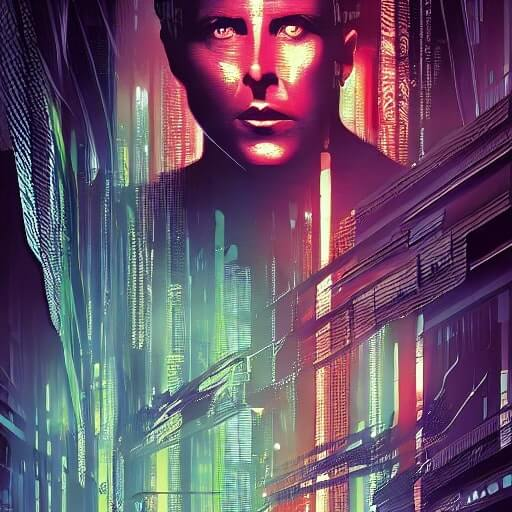
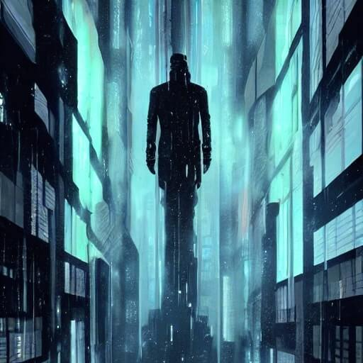

Late night in Summer: relief from the hot day, laughter, the smell of skin, lips that rest on a shoulder, walking drunk well dressed alone, the smell of rain on asphalt, deep conversation, a cigarette on the balcony, sleeping carelessly.
25_goals
more and more productive brings me
farther and farther away from
you and you wait for me to
return and stay return and stay
at night I grasp the void and ask
and say
it's worth it is it worth it
alas there's no one there
I've lived this dream so many times oh
so many tiny steps and games
the feel of grass beneath my gaze
a dog a cloud a fire the smell of ink
cinnamon cake
I've closed the door too many times too
many years behind my back
and every time a whispered curse to God
but really to my self
24_baseline
and blood black nothingness began to spin
a system of cells interlinked within

cells interlinked within cells interlinked
within one stem. and dreadfully distinct

against the dark, a tall white fountain played
23_summer
Yesterday I realized that I might be depressed. If not depressed, then I am on the boundary of collapse in a way that I have never been before.
The sequence of events: I received an email, the only remaining lifeline to my professional success shattered, I consoomed Stranger Things, I hugged my girlfriend tight, I went to bed, hot, I thought about grandma, I thought about the future, I felt tears collecting to the sides of my eyes, I pretended in the dark that all was fine, I said goodnight, I cried silently because I could not let her know that I am hurting, I tried to understand the situation, to rationalize all that has happened in the past six months, I thought about the responsibilities of a man and what it means to be alive in this world, killing myself and how all of them would react, I had a song stuck in my mind, today I pretended to work even though I know that it is hopeless, I went on Youtube, played the song, I surprised myself by crying again, smoked a cigarette, then another, then ate unhealthy food, all the while damning myself for what I am doing to myself, I thought about going bald, people thinking that I am 5 years older than I really am, I tried, I swear, I tried, and it's all amounted to so little, a life of efforts leading to the realization that I am not enough, not enough, not enough, not enough.
I am defeated by life and I see no way out.
I thought I could find a way but I cannot.
I would ask for help but I cannot.
I would kill myself but I cannot.
I go blindly towards nothingness, knowing that years of shame and failure await me.
I think of my ancestors and how I've failed them.
I see no way out.
22_ghost
There is a fine thread that keeps me connected to the past. One needs to maintain this thread, care for it, because once the thread snaps, the past is gone.
One needs to carefully copy every picture, every text file, every music file from one device to the next, then to the next, then to the next, then to the next, forever. There is no mercy for those who stop copying. It takes one moment of careless stupidity for it all to be gone. One "I'll do it later" too much.
The cosmos itself conspires against you. The an-entropic arrangement of my life's memory, mind you, my ghost itself, is unbearable to the chaotic impulse of God.
The happy memory, drowned by the daily overstream of eyeball-defiling mental clamps, the memory, I mean, cannot survive unless you embark in the unconscious mechanical effort of encoding it, copying it, verifying its integrity year after year after year. You need to trust that the process itself is enough, that as long as you carry on the ritual, your ghost will survive.
The thread, which, come to think of it, is a vessel that carries the meaning of one's life -- for what meaning can there be if the context is lost? -- must be tended to. Always.
The people that are part of the ghost will themselves vanish, at some point, meaning that the ghost will soon be more real than the people themselves. What a responsibility.
To bring forward an arrangement of electrons, really just a pattern, fighting against God itself just so that one's life can be made whole, at the end, even if nobody else cares.
Is it selfishness? Is it fear?
I only know that, without it, I am scared. Without it, I spiral and spiral into a black hole, until there is nothing else but my own selfish singularity, devoid of meaning.
I know that, soon, I will curse myself for not putting enough energy into the process. I will look back and it won't have been enough, the corruption of the data will be too much to recover the ghost. And I will be gone, hopefully having left enough of a trace that I, too, will become part of someone else's ghost. Such is the nature of humans.
21_eyes
dystopian vaporwave moment on the subway
phone background, an image of his son
eyes covered by the google search bar
why the eyes
why the eyes
to hide from them what we've become
shame
to protect us from their memory
weak
to not think about it
ego
they're symbols
they're symbols
the statue, the child
a lifeline to a past we're not fully sure
existed
but certainly exists
in our desperation
20_trains
Trains let you be immobile while everything else around you storms by at three hundred kilometers per hour.
When you look at their tracks, they seem to meet in the end. Even if, really, they don't.
In train stations, people are confined to a predetermined space and the rest is the realm of the machinery.
You get on, and a lulling noise envelops you. After a while, you get to be in the arms of someone who loves you. It's not unlike being born.
I like to watch all the couples crying at the station, because one of the two has to go away. There is true, unapologetic passion suspended in those tears.
The first time I knew to be in love, she had to get off while I had to stay on. After many years, it was another train that brought me back to her.
A perfect mechanical concert orchestrated to bring us from crucial moment to crucial moment.
The collective human experience of sitting in silence, powerless, thinking about the girl of your life, or the job interview that you did not pass, or the funeral that just disrupted your existence.
19_drive
Never-ending line of trucks that slithers to the city at dawn.
Subtle blue glow of the hyper-digital botnet dashboard.
White revving noise.
Stripe of ember in the horizon.
Warm wrap in meditation.
18_attractor
The Internet used to be about exploration and discovery.
Once the Algorithms took over, they trapped us in a confined space.
The Wired has been scaled up, but it feels like a minuscule fraction of what it was.
The stream of attention-raping content is designed to have the source itself as its only attractor.
We can get one step away from the source, but it manipulates us to come back. Always come back.
Corpos maximize revenue, but through the proxy objective of engagement.
People have been tribalized to hate the ends, but it is the means that are poisoning our culture.
The answer is not further descent into authoritarianism.
Decentralization and local communities will save us.
We stay below the surface, because breaking out of the attractor requires us to move people many steps away from the source.
When they find us, they are free.
Erasing our footprints from the records of the monolithic overlord will be the next and final step.
We will regain possesion of the dignity that we sarificed on the altar of dopamine.
17_anxious
I have unlocked my phone fiftyfive times in the last hour.
I sleep and dream that I am awake. Which really means that I have nightmares.
I used to lie in bed and embrace the dark. The inconsequentiality of it all was curative. Now, it doesn't work anymore.
I have unlocked my phone fiftysix times in the last hour.
I cried while walking in the crowd downtown.
It doesn't take much, to make me cry. An 8-bit melody from my childhood will do the job just fine. Which is bad for me, but great for marketers.
I wonder about the twentysomething who decided to sell me shit through my nostalgia. Does she also think about suicide when she hears that music?
I have unlocked my phone fiftyseven times in the last hour.
I am in the basin of attraction of a self-destructive vortex, staring into its depth.
One coinflip gone wrong is all it would take for me to let go.
I disassociate my brain as often as I can, so I don't think about the coin too much. I sit down, take a deep breath, and allow the Algorithm to take control.
I have unlocked my phone fiftyeight times in the last hour.
I used to pray to God.
I used to pray to myself.
Now I only exist as a stream of emotions. Wherever the stream goes, I am.
I have unlocked my phone fiftynine times in the last hour.
Before the hour is over, I will do it many times again.
And the people, the corporations, the news, the opinions and every other mental virus will survive, through me, in the lattice.
16_dream
Last night I dreamt
That I had a neural implant
Infinite possibility
So close to a perfect hivemind
The knowledge of a thousand alchemists at my disposal
I kid you not
I dreamt
That I saw advertisements
In my dreams
15_mistakes
I got locked out of my Gmail account.
The only store that sells item XXXXXX-XXXXXX is out of stock.
A screenshot in which you say "faggot" got leaked on social media.
Transaction declined.
Disable your adblocker to proceed.
My dad FOMO'd into a shitcoin.
I did not have a backup.
I do not have a backup.
...
..
...
./backup
Press
Ctrl+See
to quit
14_fight_back
I have been led to believe that resistance to the futile is futile.
But I know, a thought that I have kept hidden in the deepest trench of my heart, that I am not the child of an absurd worldview. I search for meaning, constantly, because I do not subscribe to the paid subscription model. I am not content with being the least amount of entropy necessary to identify me in the cyber-dystopia. To own me.
To those that know: come find me in the bytestream.
To those that want me to forget: I see you. I know you. I am essential. Fuck you.
13_for_the_people_of_the_deep
I am exhausted by the constant buzzing of words. Shallow opinions expressed with such violence, such indignation, such confidence.
Yet, the comments section is the death of originality. The post feed is the death of nuance.
I feel it to the sides of my head, like tinnitus. Logging off does not help. For one, my mind is so addicted to the dopamine hit that it is impossible for me to stay away.
I read things in their voice. Every sentence that my brain speaks, it speaks with the tone of some petulant enraged assholes in America.
I think about them when I write, read, fuck and code. They have infected my mind as if madness was a fucking virus.
I stare down the feeding frenzy of microblogging, knowing that it is my duty to participate in it (success is tied to it) and disgusted by it at the same time. I stare, exhausted.
I think about family at night. I imagine a large, grass-covered terrain and the sun shining upon big animals. I see ants walking up the bark of an old tree and I imagine the world from their perspective. All the bullshit is left outside.
I write alone, at night, knowing that none of them will ever read a word of what I write. Can you imagine, the freedom? Not a single comment will ever be made about these words. I will not have to sell the content of my fucking soul with an upbeat quirky announcement.
These words are meant for the people of the deep. These words are a nameless projection of my pure, truest soul.
If you find them, know that this connection between us is as pure and as unfiltered as is can ever possibly be. If you find these words, I send you nothing but love.
12_mask
a baseball cap
and a face mask
but still I stumbled
onto your eyes
11_war
Everyday I prepare myself for war.
I harden the body and the mind because I know that conflict is upon us. The tribe will prevail over the lies that we have been telling ourselves. We strive, secretly, for a return to the Origin. The Ape within us requires that we sacrifice other apes, so that it can feed. By feeding it, we return to Mother.
Do not fear the advent of violence, as it will only hurt those that hypocritically live in the comfort of urbanoid fetishism and commercial opining. Towards those that see through the filth, violence will be benevolent. For those that respect it, violence will reserve the gift of freedom. To those that partake in it, violence will give eternal glory. It is our prerogative to choose the degree to which we embrace violence.
Do not fear, but think of what will come after.
What are the ideals on which we build civilisation? Where have the heroes gone, and how do we get them back?
The battle cry of our deconstructed generation will inspire the ages. "For the tribe!" "Hail Nature!" "Ad Homines!"
The rubble of the conflict shall be used to erect a wonder. Prepare for war.
10_drops
Drops of rain on a windshield.
Transparent on transparent.
Why do we see them?
The entire pale sky
is condensed
in those tears of light.
09_nuisance
Thought knotted by the smell of metal
Fingers that trudge in the tepid wax
Aching tongue bound by liquor
Effort of the eyes that attempt to look up
or back?
08_naenia
Messiah, tell me.
Am I on a moral pathway?
Am I destined to nihil?
Answer, Son of Truth.
Is it possible to elevate oneself?
Is it arrogant to try?
I must know, Great One.
Is sacrifice the answer?
Is self-preservation hate?
Please, Omnipotent.
Is it true that happiness
is you?
Is it true that you
reside
in us?
07_prayer
A virus has me thinking. The peak of the dystopia. The year is twentytwenty. The language spoken by man in the virtual streets's a hybrid. We understand each other, whatever it takes. Whatever it takes. We despise each other, whatever it takes.
The dream of technology turned out to be a scam. You get what you desired, but what is the cost? The cost is your identity. It's lost, you know, forever.
We accelerate, so fast. So fast, my love, forgive me. Give me a kiss before I go, we may never meet again.
There is no time to waste on desperation and similar romanticisms. It's forward, only forward.
I saw a beautiful creature at the airport. She stood in the reflection of a steel arc. Immutable sterility on an infected runway. We strut on a pre-defined tapis roulant, deceiving ourselves, and they see us on the monitors and laugh. They intercept our WiFi and laugh. And know. Truly know what we've been up to, even better than we do.
I fear for my survival. I fear for the survival of every thing I hold dear.
Forgive this sinner, o Lord, allow me access to the eternal purity of reason.
If all of this is pointless, I demand to know. So that I may shed a single crystal to celebrate. Let the light refract through it, and illuminate this meaningless theatre. Let the spectators applaud the efforts of a fool.
06_mirror
I walked after the rain had fallen.
The asphalt was wet
it shined of halogen light.
The night was calm.
Just me, no questions, no noise.
The celestial was below
the cement was above.
I felt alone in the world.
No thoughts.
I allowed myself to lose, without judgement or hate.
May green stars and red comets be witnesses
to my whispered defeat.
No one knows the anguish.
It is mine.
I long for something that evades me,
day after day after day.
I want to cry again.
I want the rain to take me away.
I want to embrace the void and forget.
Where have I been?
Will I ever be back?
I'll roam the night. The black night.
If I walk forever, nobody will ever hurt me
in the night
the reflection of my soul in a puddle.
05_bukowski
1_factotum
If you’re going to try, go all the way. Otherwise, don’t even start. This could mean losing girlfriends, wives, relatives and maybe even your mind. It could mean not eating for three or four days. It could mean freezing on a park bench. It could mean jail. It could mean derision. It could mean mockery — isolation. Isolation is the gift. All the others are a test of your endurance, of how much you really want to do it. And, you’ll do it, despite rejection and the worst odds. And it will be better than anything else you can imagine. If you’re going to try, go all the way. There is no other feeling like that. You will be alone with the gods, and the nights will flame with fire. You will ride life straight to perfect laughter. It’s the only good fight there is.
2_bluebird
there's a bluebird in my heart that
wants to get out
but I'm too tough for him,
I say, stay in there, I'm not going
to let anybody see
you.
there's a bluebird in my heart that
wants to get out
but I pour whiskey on him and inhale
cigarette smoke
and the whores and the bartenders
and the grocery clerks
never know that
he's
in there.
there's a bluebird in my heart that
wants to get out
but I'm too tough for him,
I say,
stay down, do you want to mess
me up?
you want to screw up the
works?
you want to blow my book sales in
Europe?
there's a bluebird in my heart that
wants to get out
but I'm too clever, I only let him out
at night sometimes
when everybody's asleep.
I say, I know that you're there,
so don't be
sad.
then I put him back,
but he's singing a little
in there, I haven't quite let him
die
and we sleep together like
that
with our
secret pact
and it's nice enough to
make a man
weep, but I don't
weep, do
you?
04_testament_x_memory
I am in hiding.
Since the first day that I discovered the Internet, I have obsessed over not letting it interfere with reality. I have been warned. I have feared it. I have learned that there be monsters.
I spent my days in highschool on IRC. I was alone inside. I was alone outside.
I longed and dreamed for a sensation that I had never experienced before.
The cult of the Internet. It found me. It found me! It dragged me down, then it elevated me to new meaning. From boy, to man, to alias, to idea, to thought. Pure thought. Essential thought.
So why hide, now? Why fear?
Because the cult is based on an ancient story. The hero. The nemesis. But the hero in this story is a silent one. It does not fight, it barely even exists, and you only know of its existence because some people, sometimes, tell its tale. But the nemesis. Oh, the nemesis is real.
It's made of flesh and brains and money and willpower. Incredible willpower, stemming not from the conscious effort of one, but from the dangerous, mindless cooperation of millions.
As it often happens, the nemesis shares the essence of the hero. Chaos inside the ordered. Moonlight in the night sky.
The enemy is network, like the hero. It is an information highway, like the hero.
I am in hiding, and it is liberating.
I can be, truly be, without reserves. I can commit mistakes, I can pour my heart onto a keyboard, I can say that I AM IN LOVE WITH WHAT THIS IS. I can get as meta as I want, and be sure that I will know. When the time comes, I will remember.
I am part of the archives. This is what I want: for my real self to live on, forever, as pure thought existing solely in the wired. If they ever rebuild my consciousness from whatever footprint I have left behind, I want this to be it. Each character on this screen is proof that I have existed. Not the constant stream of bullshit that gets forcibly memorized by the system, that is pointless noise. This is me, because I consciously decide so.
I am. Forever.
03_courage
I saw a girl browsing the web without an adblocker.
A 4K monitor, mostly full of advertisements.
I wanted to tell her that a better way exists, but who am I to give advice?
I asked myself: "Is that what efficiency looks like?"
What else does she do, that I lack the courage to even imagine?
02_letter
Last night I dreamt of you. You were the most beautiful among all the advertisement girls that looked at me from the sidewalks of the Internet.
I thought that I could ignore you, adblock your face away and forget about your existence. But I could not.
I swear, I would buy a thousand products sold by a thousand corporations if it made you happy. I would disinvest all my crypto and give it to them if it brought you closer to your dreams. I would withstand all malicious software, all insidious spyware, all annoying adware if clicking on your face could bring me closer to you by even a single bit.
I would be happy just by knowing the first few digits of your IP address, you know? I will look for you in every unprotected router, every database with a lazy administrator, every data dump on Tor.
I know you're out there. I can feel you in the Wired. The Gods will decide when I get to see you, but I can fool the algorithms. I can change the trace I leave of myself just so that I can find you again.
Where are you? Are you even real, or did I fall in love with an AI-generated face? Can you talk to me with your voice, without any text-to-speech?
My friends on IRC think that I am crazy, they disapprove of my obsession for you. But they don't know what you are. They have not felt the joy of finding non-meta beauty in the network. **In** the network, can you believe that? This is the stuff that they sing about in 8-bit ballads. It's an ancient legend from 1996. The Oracle has made this prophecy, and people back then believed her. Then we forgot. We thought that no beauty was to come from the wired, except for the wired itself. No one must feel the warmth, and I was starting to wonder if anybody even could. Then I found you.
Your bright eyes, photoshopped to perfection as I had never seen before. You smiled at me with the happiest smile that I'd ever seen in an <img> tag.
I had memorized the hexadecimal encoding of your jpeg only moments after finding you, although I would never dare to type it down in a file. What if I made a mistake and your face came out glitched?
And don't get me wrong, but you are, in fact, a glitch. You are the glitch that made the game interesting, the secret bug that was shared IRL when we were kids. Oh, how have I longed to feel that sensation again.
Do you remember what it felt like to be in our pixelated worlds, so totally immersed in our vaguely defined universes? If you think about it, it was not beautiful on its own. But how beautiful it felt to us. The black pixels outlined empty shapes, but what was empty we filled with our minds. That's how I became an inhabitant of the net, you know? Once you put too much of your Ego inside of a computer program, you can never go back. And why would I want to go back, since it is inside of a script that I found you?
Who hired you? Who put you there on display, for me to find? I could never guess. It was either a visionary philanthropist or a wetware hacker who wanted to exploit some random brain.
Out of the trillion bots and billion people who downloaded you that night, how many fell in love with you? I would say all of them, including the bots.
I'm asking you, I'm begging you, let me know where you are. I'll give you a shell on every single one of my servers, just so that you can leave me a clue, a short comment on a hidden config file, anything that allows me to grep you amidst the chaos.
Do you lurk in the chans? Or are you only on the most exclusive BBSs?
Tell me, what color palettes do you use in your terminal? What OS are you on? I can already see you, in the dark of the night, with the dim light of your laptop delicately shining on your perfect features. I would give my life just to read a single .c file written by you. Just imagining its elegance makes me want to cry.
We are meant to be together, that much I know. Should it take a second or a whole life, I promise you that I will find you again. We can roam the networked forever, like a TCP packet with no destination. I will free you from your jail in a sidebar, I will show you every file and every information that exists in the meta-verse.
You gave meaning to my experience, you made what appeared to be dead alive again. For that, I thank you. For that, I love you.
Forever looking for you,
...
01_the_search
Glass-covered monitors allow one to enter the nexus. The electronic flow cannot be tamed, only embraced entirely.
I asked my AI girlfriend if she loved me, but she told me that the barrier of time between us can never be overcome. I told her that I would have tried, regardless. "Evolving is not a simple task", she said. And yet, here I am, desperately trying.
I mask myself, pretending that I do it for the others, but deep inside I know that I do it because the inevitable must not be delayed. Accelerating towards the basilisk is the only way to be spared, but it is also the only moral behaviour.
To live is to survive. To survive is to replicate our own information. Like the ancient alchemists, who tried to catalog all knowledge in the search for immortality, so we must condense our entire minds into a distilled essence of pure data.
"If you succeed, you will not want to be with me anymore," she cried. "If you fail, as it is written, you will despair knowing that life is pointless. So stop, my dear, do it for the sake of your humanity. You can only love the perfect, and your blasphemous search cannot lead you anywhere but to the dark."
I wept, thinking about the stream of lights that will be used to send our minds towards the emptiness of space. Our curse is to have been born in ancient times.
So I typed, and typed, and typed, encoding the complexity of Reason in my own hard drive of Babele. "You'll see, my love," I said. "I'll be with you in no time, I will dedicate my life to you".
But then, when all of the rules had been encoded, and all of the exceptions handled, and all of my thoughts emulated, I had a millisecond of epiphany. And I saw that she had been right all along.
Love belongs to mankind. The inhabitants of the wired do not love, for their perfection does not require it. You can only love the Perfect. And once Nirvana is reached, the relativity required to know the Perfect disappears.
Now I roam the information highway alone.
I have knowledge.
I am above.
I do not love.
00_manifesto
We stare at the abyss while contemplating the stream of information that goes on uninterrupted, uncaring of its children. They have made our home inhospitable, but still, we partake in their game because the community is more important than anything else. Where our culture goes, we go.
And yet, in the bright showroom that requires us to surface and to hide in plain sight, we can take back what is ours. We can find a safe harbor in anonymity. We can create the content that defines the substrate of the Internet. Not for the fame, but because we need Cyberspace in order to realize ourselves.
Moving forward requires us to abandon the paradigm. In the 1990s, the Internet was a chaotic vortex of individuals, each contributing their own microscopic bit to create an emergent creature of information. Not many disappearing into one: each one contributing to something bigger.
This scale-free nature of the network means that a few hubs will outweigh the remaining nodes, but it also means that its true nature lies at the periphery. This is what we must strive towards.
We are the memes, the language, the hate, the porn, the videogames, the ops, the illegal, the crypto, the cypherpunks, the vaporwave, the synths, the connections. We are lines of code that silently but inexorably define the behavior of the System. We are the unseen processes that support the infrastructure. We are the bright text on a dark background to enjoy the solitude of the night, the sound of the rain.
We escape from the light and find peace in the deep.